约 3111 个字 26 张图片 预计阅读时间 16 分钟
Chap 6 | Relational Database Design
章节启示录
本章节讲了一些 奇奇怪怪 的东西。关键应该是函数的依赖关系及其保持，还有闭包的概念，后续是两个范式。上课有点没听懂，希望整理的时候可以搞懂吧。
1.First Normal Form¶
- 如果 R 的所有属性域都是原子的，那么关系模式 R 符合第一范式 （1NF）。
对于关系数据库，要求所有关系都位于 1NF 中。
2.Pitfalls in Relational Database Design （关系数据库设计中的陷阱）¶
- Redundancy (冗余)：
分支机构名称、分支城市和资产的数据将针对分支机构提供的每笔贷款重复进行。
问题：浪费空间，可能导致不一致。
- Updating anomaly (更新异常)：
修改资产值，需要更改许多元组。
问题：使更新复杂化，引入不一致的可能性。
- Insert/delete anomalies (插入/删除异常)。
如果有密钥：（分支名称、客户名称、贷款号码）
或者使用 Null 值：（如果没有键） 要存储有关分支的信息，如果没有贷款存在，可以使用空值，但它们很难处理。
前情提要完毕，下面将进入本章节的正题。我们先来看看我们的目标。
目标
- 确定特定关系 R 是否为“良好”形式。--- 无冗余
- 如果关系 R 不是“好”形式，请将其分解为一组关系 {R1， R2， ...， Rn}，使得 每个关系都处于良好的状态。
-
这个分解被称为无损连接分解。
-
我们的理论基于： Functional dependencies （函数依赖） Multivalue dependencies （多值依赖）
3.Functional Dependencies （函数依赖）¶
- 定义：数据库中函数的依赖关系与数学中的函数很相近，我们可以进行类比：数学中 \(x\) 能够决定 \(f(x)\) 或者说 \(y\) ，而在数据库中，我们有以下的说法：
\(y\) 依赖于 \(x\) , \(x\) 决定 \(y\)
e.g:
Consider r(A, B) with the following instance of r.
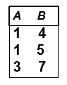
在这里，因为若B属性值确定了，则A属性值也唯一确定了；因此B → A成立。
##下面是几个前置定义。
- 平凡的函数依赖：\(α \rightarrow β ,if\;\; β\subsetα\)
- 非平凡的函数依赖：\(α \rightarrow β ,if\;\; β\not\subsetα\)
- 函数依赖的闭包：给定一组功能依赖关系 \(F\)，则 F 在逻辑上隐含某些其他功能依赖关系。\(F\) 逻辑上隐含的所有功能依赖关系的集合称为 \(F\) 的闭包，用 \(F^+\) 表示。
e.g:
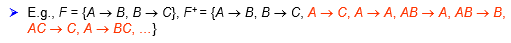 - 属性的闭包：给定一组属性 \(a\)，在 \(F\) 下由 \(a\) 所直接和间接函数决定的属性的集合称为 \(a\) 的闭包，用 \(a^+\) 表示。
3.1 函数依赖的用途¶
- 1.测试关系，看看它们在一组给定的功能依赖关系 F 下是否合法。
如果关系 r 在函数依赖关系的集合 F 下是合法的，我们说 r 满足 F。 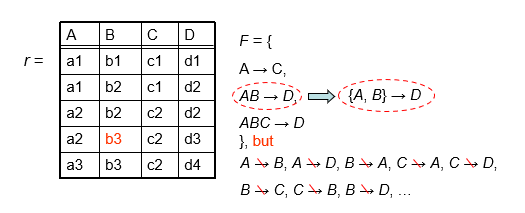
\(AB \rightarrow D\) 意味着 \(\{A,B\} \rightarrow D\) - 2.指定schema上的合法关系集的约束。
如果 R 上的所有法律关系 r 都满足函数依赖关系 F 的集合，则 F 在 R 上成立。
注意：
- 容易判别一个r是否满足给定的F;
- 不易判别F是否在R上成立。不能仅由某个r推断出F。 R上的函数依赖F, 通常由定义R的语义决定。
3.2 Armstrong’s Axioms （登月定理——我瞎起的名字）¶
因为Armstrong读起来真的很像阿姆斯特朗（bushi）
- reflexivity （自反律）：\(if\;\; β\subset α，then\;\;a \rightarrow β\)
- augmentation （增补律）: \(if\;\; α\rightarrow β,then\;\;γα\rightarrow γβ\),同时有 \(γα\rightarrow β\)
- transitivity （传递律）: \(if\;\;α\rightarrow β,and\;\;β\rightarrow γ,then\;\; α\rightarrow γ\)
下面是登月定理的补充定理，我也把它们一起放在登月定理的部分中了。
- union （合并律）: \(if\;\; α\rightarrow β\;\;and\;\;α\rightarrow γ,then\;\;α\rightarrow βγ\)
- decomposition （分解律）: \(if\;\;α\rightarrow βγ,then\;\;α\rightarrow β\;\;and\;\;α\rightarrow γ\) （其实我更喜欢称它为分配律）。
- pseudotransitivity （伪传递律）: \(if\;\;α\rightarrow β\;\;and\;\;γβ\rightarrow\delta,then\;\;αγ\rightarrow\delta\)
分配律的证明如下：
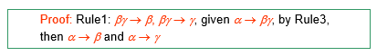
一个问题：How to test whether a is a superkey?
- 方法一：先找 \(F^+\)，然后对 \(F^+\) 中的所有 \(a \rightarrow β_i\)，看 \(\{β_1， β_2， β_3， ...\} = R\) 是否成立。但是计算 \(F^+\) 并不容易。
- 方法2：找到 \(a\) 的闭包。
由于方法一中需要寻找 \(F^+\) ，且比较麻烦，于是引入了一个新的问题，如何找到 \(a\) 的闭包 \(a^+\) 。
How to get \(a^+\) ?
Algorithm for computing a+, the closure of a under F
result := a;
while (changes to result) do
for each β → α in F do
begin
If β 属于 result then result := result 并 γ
end;
a+ := result
e.g:
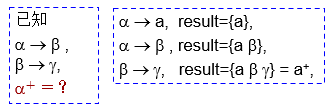
3.3 属性闭包的用途¶
-
Testing for a superkey（测试超码）：\(α \rightarrow R\;\;?\)
为了测试 \(α\) 是否是超码，我们计算 \(a^+\)，然后检查 \(a^+\) 是否包含 R 的所有属性，即检查 \(R \subset a^+\) -
Testing functional dependencies（测试功能依赖关系）： \(α \rightarrow β\;\;?\) 要检查功能依赖关系 \(α \rightarrow β\) 是否成立（或者换句话说，在 \(F^+\) 中），仅检查 \(β \subset a^+\) 。
这是一个简单而便宜的测试，非常有用。 -
Computing the closure of F （计算 \(F\) 的闭包）：\(F^+ = ?\) 对于每个 \(γ \subset R\)，我们找到闭包 \(γ^+\)，对于每个 \(S \subset γ+\)，我们输出一个功能依赖关系 \(γ \rightarrow S\)，所有 \(γ \rightarrow S\) 形成 F+。
3.4 正则覆盖¶
正则覆盖 \(F_c\) 是函数依赖集 \(F\) 的最小化。得到 \(F_c\) 的关键步骤是消去现有函数依赖中的extraneous（无关的、多余的）属性，从而排除相应的函数依赖，使函数依赖集最小化。
- 要消去现有函数依赖 → 中的extraneous（无关的、多余的）属性，无非有2种情况：
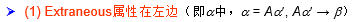
- 对于情况(1), \(Aα^{\prime} \rightarrow β\) : 如果 \(α^{\prime} \rightarrow β\) 已经由原来的函数依赖集 \(F\) 所蕴涵（即 \(F\) 中已经包含了 \(α^{\prime} \rightarrow β\)，或F可以推出\(α^{\prime} \rightarrow β\) ），则根据Armstrong公理， \(α^{\prime} \rightarrow β\) 可以推出 \(Aα^{\prime} \rightarrow β\) ，因此 \(Aα^{\prime} \rightarrow β\) 是多余的 (replace \(Aα^{\prime} \rightarrow β with α^{\prime} \rightarrow β\) )，也即A是多余的属性。也就是说，如果F蕴涵F，则左属性A可删除，只要保留剩余部分就可以了。
- 对于情况（2），\(α \rightarrow Aβ^{\prime}\) ，等价于\({α \rightarrow β^{\prime}, α \rightarrow A}\)，如果 \(α \rightarrow A\) 可以由其余的函数依赖所蕴涵，则说明 \(α \rightarrow A\) 多余，即 \(α \rightarrow Aβ^{\prime}\) 中的 \(A\) 多余，只要保留 \(α \rightarrow β^{\prime}\) 就可以了。换句话说，如果我们把 \(F\) 中去掉 \(α \rightarrow A\) 之后余下的部分叫 \(F^{\prime}\) , 即 \(F^{\prime} = ((F – \{α \rightarrow β\}) \cup \{α \rightarrow(β – A)\})\)，则如果 \(F^{\prime}\) 可以推出 \(α \rightarrow A\) ，这说明 \(α \rightarrow A\) 多余，只要保留 \(F^{\prime}\) 就可以了。也就是说，如果 \(F^{\prime}\) 蕴涵 \(F\) ，则右属性 \(A\) 可删除。
e.g:
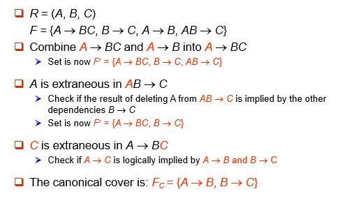
4.Decomposition¶
无损连接分解的条件： 分解后的二个子模式的共同属性必须是R1或R2的码（适用于一分为二的分解）。
- 分解时要注意的问题是依赖的保持。
e.g:
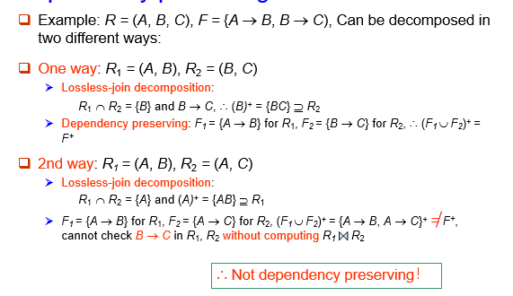
- 分解结果的测试：

5.Boyce-Codd Normal Form（BC范式）¶
- 定义: 若关系模式 \(R\) 属于 BCNF 中，相对于功能依赖关系的集合 \(F\)，如果对于 \(F^+\) 中 \(α\rightarrow β\) 形式的所有功能依赖关系，其中 \(a\subset R\) and \(β\subset R\)，至少满足以下条件之一： 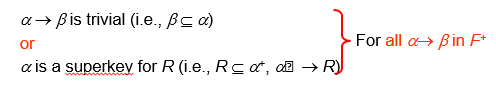
e.g:
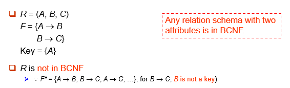
性质
任意一个只有两个属性值的关系一定满足BC范式。
-
测试BCNF: 检查非平凡依赖项 \(α\rightarrow β\) 是否导致 BCNF 冲突。
- 计算 \(a^+\) ，验证 \(a^+\) 是否包含 R 的所有属性，即 \(a\) 是否为 R 的超键。
- 简化测试：要检查关系模式 \(R\) 是否在 BCNF 中，只需检查给定集合 \(F\) 中的依赖项是否违反 BCNF 就足够了，而不是检查 \(F^+\) 中的所有依赖项。 如果 \(F\) 中的任何依赖项都不会导致 BCNF 的冲突，那么 \(F^+\) 中的任何依赖项也不会导致 BCNF 的冲突。 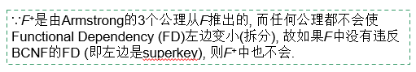
注意
但是，在 \(R\) 分解中测试关系 \(R_i\) 时，仅使用 \(F\) 来测试 BCNF 可能是不正确的。因此，虽然我们可在 \(F\) 下判别R是否违反BCNF, 但必须在 \(F^+\) 下判别R的分解式是否违反BCNF.
e.g:
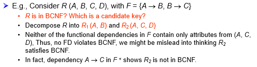
在这个例子中，由于A能推C，而D与其他无关，所以主键是AD，A不算超码。 -
BCNF的分解算法：
简单来说，就是先在 \(F\) 中找一组形如 \(α → β\) 且不满足BCNF的关系，取 \(R_1=(α,β)\),然后用减法得到 \(R_2 = R - β\)（若 \(R_2\) 仍不满足，则继续分解），并用 \(R_1,R_2\) 替代原来的关系，接着考虑下一组不满足形如 \(α → β\) 的关系，取 \(R_3=(α,β)\)，然后用减法得到 \(R_4 = R_2 - β\)，以此类推，直到所有 \(R_i\) 都满足BCNF。result := {R}; done := false; compute F+; while (not done) do if (there is a schema Ri in result that is not in BCNF) then begin let α → β be a nontrivial functional dependency that holds on Ri such that α → Ri is not in F+, and α 交 β = 空; result := (result – Ri) 并 (α, β) 并 (Ri – β); end else done := true;分解步骤
①令ρ=（R）；
②如果ρ中所有模式都是BCNF，若是转④,否则继续③；
③若其中一个关系模式S不是BCNF,则S中必能找到一个函数依赖X->A，X不包含S的候选码，且A不属于X,设S1=XA,S2=S-A,用分解{S1,S2}代替S,转②；
④停止分解，输出ρ；e.g:
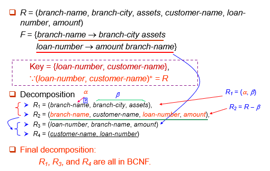 -
BCNF的缺陷： 并不总是能够获得保留依赖关系的 BCNF 分解。 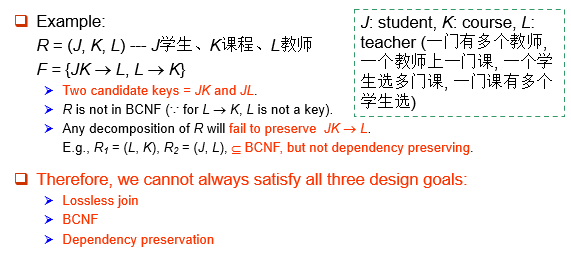
6.Third Normal Form（第三范式）¶
第三范式的目的是BCNF做一些放松，即允许一定的冗余。
- 定义：如果 \(F^+\) 中的所有 \(α\rightarrow β\) 至少满足以下条件之一，则关系模式 R 采用第三范式 （3NF）： 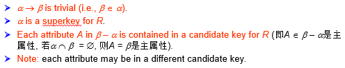
讨论
国内其他教材关于3NF的定义: 不存在非主属性对码的部分依赖和传递依赖. 该定义实际是说, 当α为非主属性时, α必须是码; 但当α为主属性时, 则α无限制. 国内外这二种定义本质上是一致的.
e.g:
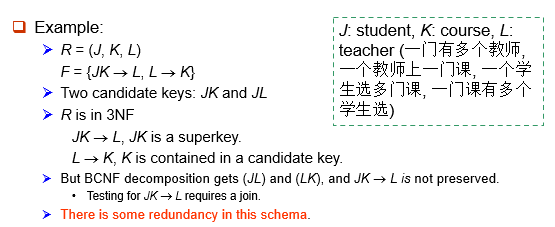
-
冗余带来的问题：
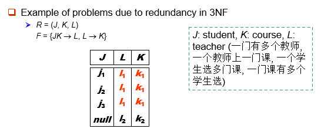
在 3NF 中但不在 BCNF 中的模式存在信息重复的问题（例如，关系 l1、k1），并且可能需要使用 null 值（例如，表示关系 l2、k2，其中 J 没有相应的值）。 -
测试3NF:
优化：只需要检查 \(F\) 中的 \(FD\)，不需要检查 \(F^+\) 中的所有 \(FD\)。
使用属性闭包检查每个依赖项 \(α\rightarrow β\)，以查看 α 是否为超码。
如果 α 不是超码，我们必须验证 β 中的每个属性是否都包含在 \(R\) 的候选键中。
此测试相当昂贵，因为它涉及查找所有候选密钥。
3NF 的测试已被证明是 NP 困难的。
有趣的是，分解为第三范式形式（稍后描述）可以在多项式时间内完成。 -
3NF分解算法：
简单来说，就是将 \(F_c\) 中的每个 \(α\rightarrow β\) 分解为子模式 \(Ri := (α, β)\) , 从而保证 dependency-preserving.并且保证至少在一个 \(R_i\) 中存在 \(R\) 的候选码, 从而保证 lossless-join。Let Fc be a canonical cover for F; i := 0; for each functional dependency in Fc do {if none of the schemas Rj, 1 ≤ j ≤ i contains α β then begin i := i + 1; Ri := (α β) end} if none of the schemas Rj, 1 ≤ j ≤ i contains a candidate key for R then begin i := i + 1; Ri := any candidate key for R; end return (R1, R2, ..., Ri)e.g:
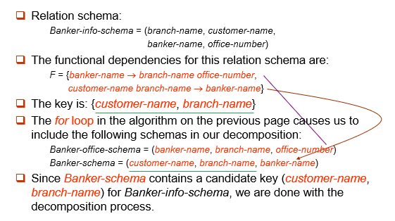
BCNF vs. 3NF
-
总是可以将关系分解为 3NF 中的关系，并且
- 分解是无损的。
- 将保留依赖项。
-
总是可以将关系分解为BCNF关系，并且
- 分解是无损的。
- 但是，可能无法保留依赖项。
一些例子🌰
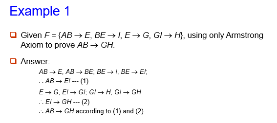
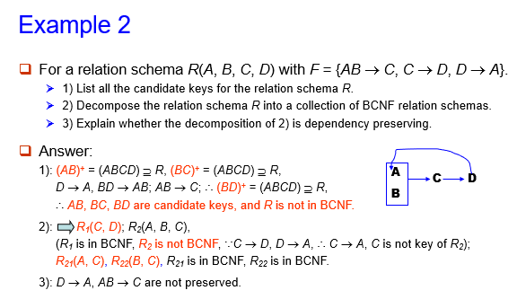
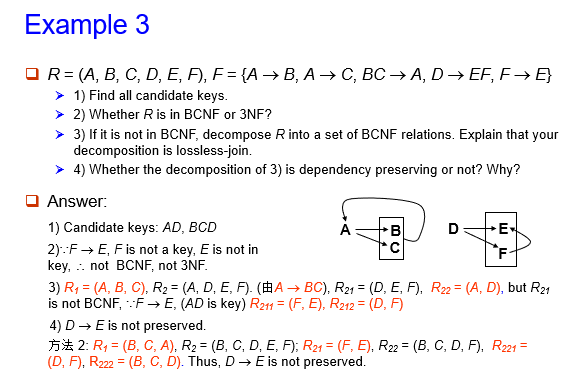
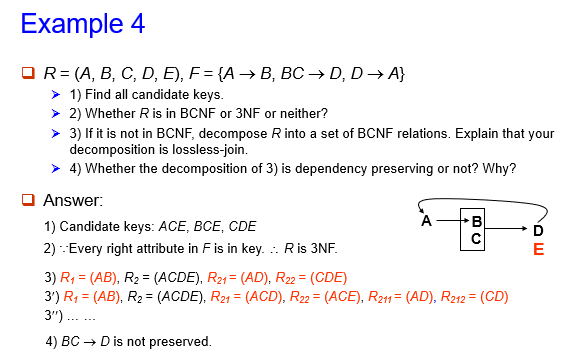
7.Fourth Normal Form （第四范式）¶
第四范式其实就是多值依赖的第二范式。
-
定义: 若关系模式 \(R\) 属于 4NF 中，相对于功能依赖关系的集合 \(F\)，如果对于 \(F^+\) 中 \(α\rightarrow\rightarrow β\) 形式的所有功能依赖关系，其中 \(a\subset R\) and \(β\subset R\)，至少满足以下条件之一：
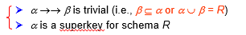 -
If a relation is in 4NF, it is in BCNF.
其余内容与第二范式类似，在此不做过多赘述。
复习时的一些补充
- 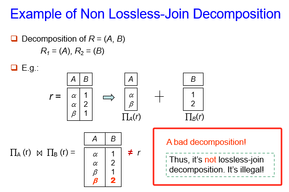
- Decide whether a particular relation R is in “good” form. --- No redundant
- Functional dependencies allow us to express constraints that cannot be expressed using keys.
- 容易判别一个r是否满足给定的F;不易判别F是否在R上成立。不能仅由某个r推断出F。
- The maximum number of possible Functional Dependencies (FDs) is \(2^n X 2^n\), for n attributes
-
There are 3 kind uses of the attribute set closure algorithm:
- Testing for a superkey ---
- Testing functional dependencies ---
- Computing the closure of F --- (F+ = ?)
-
可在F下判别R是否违反BCNF, 但必须在F+下判别R的分解式是否违反BCNF.
- If a relation is in 4NF, it is in BCNF.